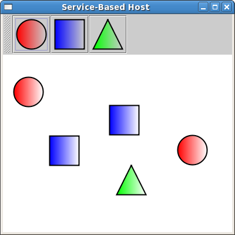

Apache Felix Application Demonstration
(This document is a work in progress.)
Apache Felix provides a foundation for creating modular and dynamically extensible applications. This page presents an example application to demonstrate the various approaches to consider when creating a OSGi/Felix-based application. It is recommended that you have a look at the more basic examples such as Apache Felix Framework Usage Documentation before you start with this one.
In order to follow this example you need three things:
- A Subversion client to check out the source code,
- The IDE of your choice to view the source code, and
- Maven to build the source code.
The source code of the examples is available in the Felix SVN repository at http://svn.apache.org/repos/asf/felix/trunk/examples. If you feel more familiar with git, you can use the git mirror at: git://git.apache.org/felix.git or browse the source code at github: https://github.com/apache/felix
Potential Approaches
When creating an OSGi-based application there are two main orthogonal issues to consider:
- Service model vs. extender model
- Bundled application vs. hosted framework
The first issue is actually a general issue when creating OSGi-based applications. There are two general approaches that can be used when creating an extensible OSGi application. The service model approach uses the OSGi service concept and the service registry as the extensibility mechanism. The extender model approach uses the OSGi installed bundle set as the extensibility mechanism. Both approaches have their advantages and disadvantages and they can be used independently or together.
The second issue is related to whether your application is run completely on top of the OSGi framework as a set of bundles or whether your application hosts an embedded OSGi framework instance. Creating applications completely as a set of bundles is the preferred approach since it allows the application to run on any OSGi framework, but this it not always possible. In such cases where it is not possible or desired, then you may host a framework instance inside your application, which will likely tie your application to that framework implementation (although less so with the framework launching API introduced in the OSGi R4.2 specification).
The remainder of this document will present variations of an example application that demonstrates these different approaches.
Example Application Overview
The example application is a very simple paint program that effectively functions identically whether using services/extensions or running embedded/hosted. The application, called the host, defines a SimpleShape service/extension that it uses to draw shapes. Different implementations of the SimpleShape can be created to allow the application to draw different shapes. Each shape service/extension has name and icon properties that the application uses for manipulating the services/extensions. Available shapes are displayed in the application's tool bar. To draw a shape, click on its button in the tool bar and then click in the drawing canvas. Shapes can be dragged, but not resized. When new shape services/extensions appear they are automatically added to the tool bar and they are automatically removed when the shape services/extensions disappear. Closing the application window causes the framework and the JVM to shut down. The following is a screen shot of the application.

Getting the source code
Currently, the example application is only available in our source control repositories. We have created two applications, one for the service-based and one for the extender-based approach. Both examples can be run as a bundled application on top of any OSGi implementation or by hosting an embedded framework. Assuming you are using svn to get the source code, you can find the source at the following locations:
http://svn.apache.org/repos/asf/felix/trunk/examples/servicebased.host http://svn.apache.org/repos/asf/felix/trunk/examples/servicebased.circle http://svn.apache.org/repos/asf/felix/trunk/examples/servicebased.square http://svn.apache.org/repos/asf/felix/trunk/examples/servicebased.triangle http://svn.apache.org/repos/asf/felix/trunk/examples/extenderbased.host http://svn.apache.org/repos/asf/felix/trunk/examples/extenderbased.circle http://svn.apache.org/repos/asf/felix/trunk/examples/extenderbased.square http://svn.apache.org/repos/asf/felix/trunk/examples/extenderbased.triangle
Check out each project using an appropriate SVN command, such as:
svn co http://svn.apache.org/repos/asf/felix/trunk/examples/servicebased.host
Building and running the examples
Once you have checked out the projects you can go into each sub-directory and build it using Maven; this assumes you have Maven properly installed. To build, simply perform the following in each project directory:
mvn clean install
After you have built the projects, start the Felix framework and install/start the resulting bundle in the target/ directory of each sub-project for either the service-based or extender-based example.
To start the examples using an embedded framework, copy the JAR files you just build to a folder in your file system. Then execute the host.jar, passing it the names of all services/extensions as parameters; for example:
java -jar servicebased.host-1.0.0.jar file:/servicebased.circle-1.0.0.jar file:/servicebased.square-1.0.0.jar file:/servicebased.triangle-1.0.0.jar
If you are using an IDE like Eclipse, you can run an embedded framework using a custom run configuration. In Eclipse click Run -> Run Configurations... and create a new Java Application run configuration. Select the host project you want to start (servicebased.host or extenderbased.host) and chose the Application class as Main class from the org.apache.felix.example.servicebased/extenderbased.host.launch package. Switch to the Arguments tab and fill in the following Program arguments (assuming you want to run the extender-based example):
file:../extenderbased.circle/target/extenderbased.circle-1.0.0.jar file:../extenderbased.square/target/extenderbased.square-1.0.0.jar file:../extenderbased.triangle/target/extenderbased.triangle-1.0.0.jar
For more details on running an application with an embedded framework scroll down to the bottom of the page.
Service-Based Application
The service-based application uses the OSGi service concept and the service registry as the extensibility mechanism. Therefore the host bundle contains a service interface located at org.apache.felix.example.servicebased.host.service.SimpleShape. The SimpleShape service has two properties: a name and an icon. Besides that it defines one operation: draw(Graphics2D g2, Point p).
Defining shapes as services
Bundles that want to contribute a shape service have to implement the SimpleShape interface. Take a look at the circle bundle for example. The circle bundle only contains one class, the Activator. A BundleActivator is responsible for starting up a bundle. Therefore it gets passed in a BundleContext, that can be used to perform registration of services within the framework. The Activator also contains an inner class that implements the SimpleShape interface and therefore represents the SimpleShape implementation of a circle. The start(BundleContext context method is used to register the circle implementation as a service:
Dictionary<String, Object> dict = new Hashtable<String, Object>();
dict.put(SimpleShape.NAME_PROPERTY, "Circle");
dict.put(SimpleShape.ICON_PROPERTY, new ImageIcon(this.getClass().getResource("circle.png")));
m_context.registerService(SimpleShape.class.getName(), new Circle(), dict);
First a Dictionary is created to hold the service's properties. The two service properties are added to the dictionary. The icon of the circle service is located under src/main/resources/org/apache/example/servicebased/circle/circle.png. It gets loaded as an ImageIcon and added as icon property. The service then gets registered in the service registry by passing the name of the service interface, a service object and the service's properties.
Detecting shape services
The host's Activator creates a DrawingFrame for displaying the different shapes. It then delegates adding and removing of SimpleShape services to a ServiceTracker implementation. The ShapeTracker gets notified, when a new SimpleShape service is added to, modified or removed from the service registry.
Extender-Based Application
In contrast to the service-based example, the extender-based example uses bundles as it's primary extensibility mechanism. The host bundle contains a SimpleShape interface that is much like the one from the service based example. It also contains a draw(Graphics2D g2, Point p) method and defines a set of properties. This time the properties are not used as properties for registering a service, but for defining bundle header properties in the bundle's MANIFEST.MF file.
Defining shapes as extensions
Bundles that want to contribute a SimpleShape extension have to implement the SimpleShape interface. Have a look at the extender-based circle implementation, for example. It only contains one class, Circle, that implements SimpleShape. Note, that in contrast to the service-based example there is no need to define a BundleActivator. This is because, there is no need to register a service within the framework. Information about the provided shape implementation is located in the bundle headers instead. Have a look at the circle's MANIFEST.MF file:
Manifest-Version: 1.0 Private-Package: org.apache.felix.example.extenderbased.circle Tool: Bnd-0.0.238 Bundle-Name: Apache Felix Circle Extension Created-By: Apache Maven Bundle Plugin Bundle-Vendor: The Apache Software Foundation Build-Jdk: 1.7.0_01 Bundle-Version: 1.0.0 Extension-Class: org.apache.felix.example.extenderbased.circle.Circle Bnd-LastModified: 1331062969798 Extension-Icon: org/apache/felix/example/extenderbased/circle/circle.p ng Bundle-ManifestVersion: 2 Bundle-Description: A simple extension for drawing circles. Bundle-License: http://www.apache.org/licenses/LICENSE-2.0.txt Bundle-DocURL: http://www.apache.org/ Bundle-SymbolicName: org.apache.felix.example.extenderbased.circle Import-Package: org.apache.felix.example.extenderbased.host.extension Extension-Name: Circle
As you can see, the three bundle properties, defined in the SimpleShape interface are set as bundle headers.
Note: The manifest file is generated by the Maven build, so you will only find it in the compiled jar. If you are interested in automatically creating manifest files for your bundles, have a look at the configuration of the org.apache.felix.maven-bundle-plugin in the pom.xml.
Detecting shape bundles
Like the ServiceTracker for tracking services, there is a BundleTracker for tracking bundles. A BundleTracker get's notified, when the state of tracked bundles change. Have a look at org.apache.felix.example.extenderbased.host.ShapeBundleTracker. The constructor defines that only active bundles should be tracked. The addingBundle(Bundle bundle, BundleEvent event) method gets called by the framework, when a bundle enters the activated state. The tracker then checks if the bundle's headers contain the extension name property and, if so, adds the icon to the application.
Embedding the Framework
The OSGi R4.2 specification defines APIs to allow an application to host it's own embedded framework instance. Therefore an implementation of the FrameworkFactory interface has to be used. OSGi implementers specify their FrameworkFactory implementation in the META-INF/services/org.osgi.framework.launch.FrameworkFactory file. Prior to Java 6, one had to parse the class name in that file by oneself. Luckily Java 6 has the ServiceLoader<S> class, that lets you easily instantiate a FrameworkFactoy. Have a look at the contents of the org.apache.felix.example.extenderbased.host.launch package in the extender-based host bundle (the implementation is the same for the service-based example).
The Application class is responsible for creating the framework and installing and starting the bundles. It uses a ConfigUtil for creating the framework configuration that is needed to create a framework using the FrameworkFactory. The ConfigUtil also creates a temporary cache directory for the framework. If the creation of the framework is successful, installAndStartBundles(String... bundleLocations) will be called to start the actual application. Therefore the Activator of the host bundle is instantiated. Note, that the host bundle can not register itself within the framework it just created. Only the extension bundles will be registered within the framework.
As you can see no Felix-specific code is involved in any of the examples. That's one of the advantages of OSGi specification. Bundles that run on Felix will run on every other implementation of the same OSGi release.
Feedback
Subscribe to the Felix users mailing list by sending a message to users-subscribe@felix.apache.org; after subscribing, email questions or feedback to users@felix.apache.org.